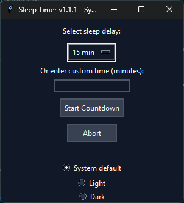

Experimental visual clock system with custom time modes and interface effects.
Custom SVG-based clock with multiple time modes, theming, sound, visual effects, quotes, and configurable display options.
SVG · JavaScript · UI design · Time systems
Tool for generating and experimenting with custom waveforms.
Python-based wave generator with both console and GUI interfaces, featuring custom waveform drawing capabilities.
Python · Console · GUI design
Customizable Windows volume feedback overlay.
Windows volume on-screen display application that shows a customizable volume bar when the system volume changes.
.NET · WPF · Windows · System tray
Earlier Java-based IRC bot foundation.
Older Java version of LeetIRCPythonBot.
Java · IRC
Cross-platform 3D File Manager
Exploration of more visual file navigation using a 3D spiral interface.
Python / PyQt / Qt3D project exploring a spiral-based 3D file navigation interface for browsing files and folders.
Python · PyQt · Qt3D · GUI design · File systems
Customer Order Database UI
Desktop database management interface for structured customer and product workflows.
Desktop database management application with login, navigation, customer registry, and product registry planning.
Python · PyQt6 · MariaDB · SQL · AWS

Simple utility for scheduling system sleep or shutdown.
Desktop application to set timers for putting your computer to sleep or shutting it down after a specified period.
Python · Desktop GUI · System automation
Personal Web and Automation Projects
Practical scripts, experiments, and utilities for real-world development workflows.
Ongoing personal projects involving web development, scripts, Linux tools, UI experiments, and practical software utilities.
Python · Bash · HTML · CSS · JavaScript · Linux